7 Version control with Git and GitHub
This Chapter will introduce you to the basics of using a version control system to keep track of all your important R code and facilitate collaboration with colleagues and the wider world. This Chapter will focus on using the software ‘Git’ in combination with the web-based hosting service ‘GitHub’. By the end of the Chapter, you will be able to install and configure Git and GitHub on your computer and setup and work with a version controlled project in RStudio. We won’t be covering more advanced topics such as branching, forking and pull requests in much detail but we do give an overview later in Section 7.8.
Just a few notes of caution. In this Chapter we’ll be using RStudio to interface with Git as it gives you a nice friendly graphical user interface which generally makes life a little bit easier (and who doesn’t want that?). However, one downside to using RStudio with Git is that RStudio only provides pretty basic Git functionality through its menu system. That’s fine for most of what we’ll be doing during this Chapter (although we will introduce a few Git commands as we go along) but if you really want to benefit from using Git’s power you will need to learn some Git commands (see Section 7.10) and syntax and change for another IDE such as VSCode which is much much better when it comes to integration with github. Git can become a little bewildering and frustrating when you first start using it. This is mostly due to the terminology and liberal use of jargon associated with Git, but there’s no hiding the fact that it’s quite easy to get yourself and your Git repository into a pickle. Therefore, we’ve tried hard to keep things as straight forward as we can during this Chapter and as a result we do occasionally show you a couple of very ‘un-Git’ ways of doing things (mostly about reverting to previous versions of documents). Don’t get hung up about this, there’s no shame to using these low tech solutions and if it works then it works. Lastly, GitHub was not designed to host very large files and will warn you if you try to add files greater than 50 MB and block you adding files greater than 100 MB. If your project involves using large file sizes there are a few solutions but we find the easiest solution is to host these files elsewhere (Googledrive, Dropbox etc) and create a link to them in a README file or R markdown document on Github.
7.1 What is version control?
A Version Control System (VCS) keeps a record of all the changes you make to your files that make up a particular project and allows you to revert to previous versions of files if you need to. To put it another way, if you muck things up or accidentally lose important files you can easily roll back to a previous stage in your project to sort things out. Version control was originally designed for collaborative software development, but it’s equally useful for scientific research and collaborations (although admittedly a lot of the terms, jargon and functionality are focused on the software development side). There are many different version control systems currently available, but we’ we’ll focus on using Git, because it’s free and open source and it integrates nicely with RStudio. This means that its can easily become part of your usual workflow with minimal additional overhead.
7.2 Why use version control?
So why should you worry about version control? Well, first of all it helps avoid this (familiar?) situation when you’re working on a project usually arising from this (familiar?) scenario.
Version control automatically takes care of keeping a record of all the versions of a particular file and allows you to revert back to previous versions if you need to. Version control also helps you (especially the future you) keep track of all your files in a single place and it helps others (especially collaborators) review, contribute to and reuse your work through the GitHub website. Lastly, your files are always available from anywhere and on any computer, all you need is an internet connection.
7.3 What is Git and GitHub?
Git is a version control system originally developed by Linus Torvalds that lets you track changes to a set of files. These files can be any type of file including the menagerie of files that typically make up a data orientated project (.pdf, .Rmd, .docx, .txt, .jpg etc) although plain text files work the best. All the files that make up a project is called a repository (or just repo).
GitHub is a web-based hosting service for Git repositories which allows you to create a remote copy of your local version-controlled project. This can be used as a backup or archive of your project or make it accessible to you and to your colleagues so you can work collaboratively.
At the start of a project we typically (but not always) create a remote repository on GitHub, then clone (think of this as copying) this repository to our local computer (the one in front of you). This cloning is usually a one time event and you shouldn’t need to clone this repository again unless you really muck things up. Once you have cloned your repository you can then work locally on your project as usual, creating and saving files for your data analysis (scripts, R markdown documents, figures etc). Along the way you can take snapshots (called commits) of these files after you’ve made important changes. We can then push these changes to the remote GitHub repository to make a backup or make available to our collaborators. If other people are working on the same project (repository), or maybe you’re working on a different computer, you can pull any changes back to your local repository so everything is synchronised.

7.4 Getting started
This Chapter assumes that you have already installed the latest versions of R and an IDE (RStudio or VSCode). If you haven’t done this yet you can find instructions in Section 1.1.1.
7.4.1 Install Git
To get started, you first need to install Git. If you’re lucky you may already have Git installed (especially if you have a Mac or Linux computer). You can check if you already have Git installed by clicking on the Terminal tab in RStudio and typing git --version. If you see something that looks like git version 2.25.0 (the version number may be different on your computer) then you already have Git installed (happy days). If you get an error (something like git: command not found) this means you don’t have Git installed (yet!).
You can also do this check outside RStudio by opening up a separate Terminal if you want. On Windows go to the ‘Start menu’ and in the search bar (or run box) type cmd and press enter. On a Mac go to ‘Applications’ in Finder, click on the ‘Utilities’ folder and then on the ‘Terminal’ program. On a Linux machine simply open the Terminal (Ctrl+Alt+T often does it).
To install Git on a Windows computer we recommend you download and install Git for Windows (also known as ‘Git Bash’). You can find the download file and installation instructions here.
For those of you using a Mac computer we recommend you download Git from here and install in the usual way (double click on the installer package once downloaded). If you’ve previously installed Xcode on your Mac and want to use a more up to date version of Git then you will need to follow a few more steps documented here. If you’ve never heard of Xcode then don’t worry about it!
For those of you lucky enough to be working on a Linux machine you can simply use your OS package manager to install Git from the official repository. For Ubuntu Linux (or variants of) open your Terminal and type
sudo apt update
sudo apt install gitYou will need administrative privileges to do this. For other versions of Linux see here for further installation instructions.
Whatever version of Git you’re installing, once the installation has finished verify that the installation process has been successful by running the command git --version in the Terminal tab in RStudio (as described above). On some installations of Git (yes we’re looking at you MS Windows) this may still produce an error as you will also need to setup RStudio so it can find the Git executable (described in Section 7.4.3).
7.4.2 Configure Git
After installing Git, you need to configure it so you can use it. Click on the Terminal tab in the Console window again and type the following:
git config --global user.email 'you@youremail.com'
git config --global user.name 'Your Name'substituting 'Your Name' for your actual name and 'you@youremail.com' with your email address. We recommend you use your University email address (if you have one) as you will also use this address when you register for your GitHub account (coming up in a bit).
If this was successful, you should see no error messages from these commands. To verify that you have successfully configured Git type the following into the Terminal
git config --global --listYou should see both your user.name and user.email configured.
7.4.3 Configure RStudio
As you can see above, Git can be used from the command line, but it also integrates well with RStudio, providing a friendly graphical user interface. If you want to use RStudio’s Git integration (we recommend you do - at least at the start), you need to check that the path to the Git executable is specified correctly. In RStudio, go to the menu Tools -> Global Options -> Git/SVN and make sure that ‘Enable version control interface for RStudio projects’ is ticked and that the ‘Git executable:’ path is correct for your installation. If it’s not correct hit the Browse... button and navigate to where you installed git and click on the executable file. You will need to restart RStudio after doing this.

7.4.4 Configure VSCode
to develop
7.4.5 Register a GitHub account
If all you want to do is to keep track of files and file versions on your local computer then Git is sufficient. If however, you would like to make an off-site copy of your project or make it available to your collaborators then you will need a web-based hosting service for your Git repositories. This is where GitHub comes into play (there are also other services like GitLab, Bitbucket and Savannah). You can sign up for a free account on GitHub here. You will need to specify a username, an email address and a strong password. We suggest that you use your University email address (if you have one) as this will also allow you to apply for a free educator or researcher account later on which gives you some useful benefits (don’t worry about this now though). When it comes to choosing a username we suggest you give this some thought. Choose a short(ish) rather than a long username, use all lowercase and hyphenate if you want to include multiple words, find a way of incorporating your actual name and lastly, choose a username that you will feel comfortable revealing to your future employer!
Next click on the ‘Select a plan’ (you may have to solve a simple puzzle first to verify you’re human) and choose the ‘Free Plan’ option. Github will send an email to the email address you supplied for you to verify.
Once you’ve completed all those steps you should have both Git and GitHub setup up ready for you to use (Finally!).
7.5 Setting up a project
7.5.1 in RStudio
Now that you’re all set up, let’s create your first version controlled RStudio project. There are a couple of different approaches you can use to do this. You can either setup a remote GitHub repository first then connect an RStudio project to this repository (we’ll call this Option 1). Another option is to setup a local repository first and then link a remote GitHub repository to this repository (Option 2). You can also connect an existing project to a GitHub repository but we won’t cover this here. We suggest that if you’re completely new to Git and GitHub then use Option 1 as this approach sets up your local Git repository nicely and you can push and pull immediately. Option 2 requires a little more work and therefore there are more opportunities to go wrong. We will cover both of these options below.
7.5.2 Option 1 - GitHub first
To use the GitHub first approach you will first need to create a repository (repo) on GitHub. Go to your GitHub page and sign in if necessary. Click on the ‘Repositories’ tab at the top and then on the green ‘New’ button on the right

Give your new repo a name (let’s call it first_repo for this Chapter), select ‘Public’, tick on the ‘Initialize this repository with a README’ (this is important) and then click on ‘Create repository’ (ignore the other options for now).
Your new GitHub repository will now be created. Notice the README has been rendered in GitHub and is in markdown (.md) format (see Chapter 6 on R markdown if this doesn’t mean anything to you). Next click on the green ‘Clone or Download’ button and copy the https//... URL that pops up for later (either highlight it all and copy or click on the copy to clipboard icon to the right).

Ok, we now switch our attention to RStudio. In RStudio click on the File -> New Project menu. In the pop up window select Version Control.

Now paste the the URL you previously copied from GitHub into the Repository URL: box. This should then automatically fill out the Project Directory Name: section with the correct repository name (it’s important that the name of this directory has the same name as the repository you created in GitHub). You can then select where you want to create this directory by clicking on the Browse button opposite the Create project as a subdirectory of: option. Navigate to where you want the directory created and click OK. We also tick the Open in new session option.

RStudio will now create a new directory with the same name as your repository on your local computer and will then clone your remote repository to this directory. The directory will contain three new files; first_repo.Rproj (or whatever you called your repository), README.md and .gitignore. You can check this out in the Files tab usually in the bottom right pane in RStudio. You will also have a Git tab in the top right pane with two files listed (we will come to this later on in the Chapter). That’s it for Option 1, you now have a remote GitHub repository set up and this is linked to your local repository managed by RStudio. Any changes you make to files in this directory will be version controlled by Git.
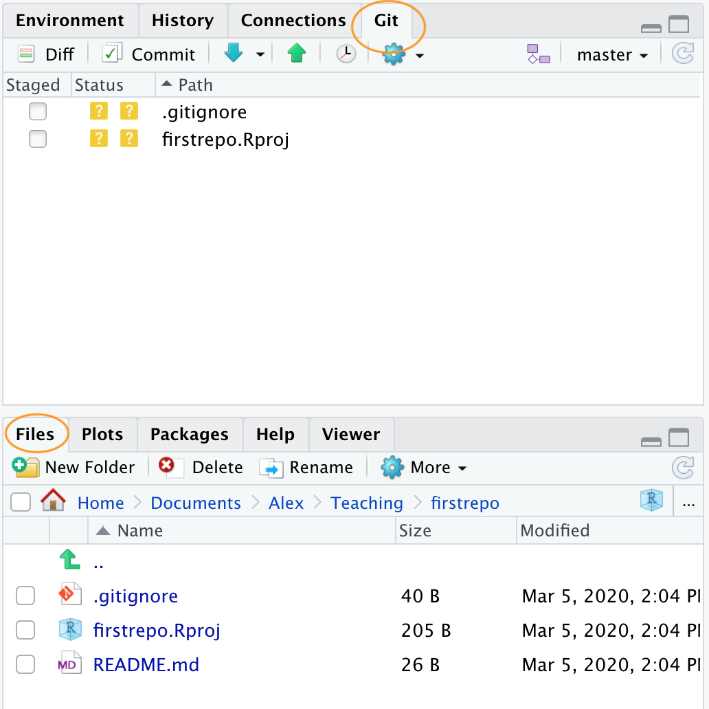
7.5.3 Option 2 - RStudio first
An alternative approach is to create a local RStudio project first and then link to a remote Github repository. As we mentioned before, this option is more involved than Option 1 so feel free to skip this now and come back later to it if you’re interested. This option is also useful if you just want to create a local RStudio project linked to a local Git repository (i.e. no GitHub involved). If you want to do this then just follow the instructions below omitting the GitHub bit.
In RStudio click on the File -> New Project menu and select the New Directory option.

In the pop up window select the New Project option

In the New Project window specify a Directory name (choose second_repo for this Chapter) and select where you would like to create this directory on you computer (click the Browse button). Make sure the Create a git repository option is ticked

This will create a version controlled directory called second_repo on your computer that contains two files, second_repo.Rproj and .gitignore (there might also be a .Rhistory file but ignore this). You can check this by looking in the Files tab in RStudio (usually in the bottom right pane).

OK, before we go on to create a repository on GitHub we need to do one more thing - we need to place our second_repo.Rproj and .gitignorefiles under version control. Unfortunately we haven’t covered this in detail yet so just follow the next few instructions (blindly!) and we’ll revisit them in Section 7.6 of this Chapter.
To get our two files under version control click on the ‘Git’ tab which is usually in the top tight pane in RStudio

You can see that both files are listed. Next, tick the boxes under the ‘Staged’ column for both files and then click on the ‘Commit’ button.

This will take you to the ‘Review Changes’ window. Type in the commit message ‘First commit’ in the ‘Commit message’ window and click on the ‘Commit’ button. A new window will appear with some messages which you can ignore for now. Click ‘Close’ to close this window and also close the ‘Review Changes’ window. The two files should now have disappeared from the Git pane in RStudio indicating a successful commit.
OK, that’s those two files now under version control. Now we need to create a new repository on GitHub. In your browser go to your GitHub page and sign in if necessary. Click on the ‘Repositories’ tab and then click on the green ‘New’ button on the right. Give your new repo the name second_repo (the same as your version controlled directory name) and select ‘Public’. This time do not tick the ‘Initialize this repository with a README’ (this is important) and then click on ‘Create repository’.

This will take you to a Quick setup page which provides you with some code for various situations. The code we are interested in is the code under ...or push an existing repository from the command line heading.

Highlight and copy the first line of code (note: yours will be slightly different as it will include your GitHub username not mine)
git remote add origin https://github.com/alexd106/second_repo.git
Switch to RStudio, click on the ‘Terminal’ tab and paste the command into the Terminal. Now go back to GitHub and copy the second line of code
git push -u origin master
and paste this into the Terminal in RStudio. You should see something like this

If you take a look at your repo back on GitHub (click on the /second_repo link at the top) you will see the second_repo.Rproj and .gitignore files have now been pushed to GitHub from your local repository.

The last thing we need to do is create and add a README file to your repository. A README file describes your project and is written using the same Markdown language you learned in Chapter 6. A good README file makes it easy for others (or the future you!) to use your code and reproduce your project. You can create a README file in RStudio or in GitHub. Let’s use the second option.
In your repository on GitHub click on the green Add a README button.

Now write a short description of your project in the <> Edit new file section and then click on the green Commit new file button.

You should now see the README.md file listed in your repository. It won’t actually exist on your computer yet as you will need to pull these changes back to your local repository, but more about that in the next section.
Whether you followed Option 1 or Option 2 (or both) you have now successfully setup a version controlled RStudio project (and associated directory) and linked this to a GitHub repository. Git will now monitor this directory for any changes you make to files and also if you add or delete files. If the steps above seem like a bit of an ordeal, just remember, you only need to do this once for each project and it gets much easier over time.
7.5.4 in VSCode
to develop
7.6 Using Git with RStudio
Now that we have our project and repositories (both local and remote) set up, it’s finally time to learn how to use Git in your IDE!
Typically, when using Git your workflow will go something like this:
You create/delete and edit files in your project directory on your computer as usual (saving these changes as you go)
Once you’ve reached a natural ‘break point’ in your progress (i.e. you’d be sad if you lost this progress) you stage these files
You then commit the changes you made to these staged files (along with a useful commit message) which creates a permanent snapshot of these changes
You keep on with this cycle until you get to a point when you would like to push these changes to GitHub
If you’re working with other people on the same project you may also need to pull their changes to your local computer

OK, let’s go through an example to help clarify this workflow.
Open up the first_repo.Rproj you created previously during Option 1. Either use the File -> Open Project menu or click on the top right project icon and select the appropriate project.

Create an R markdown document inside this project by clicking on the File -> New File -> R markdown menu (remember Chapter 6?).
Once created, we can delete all the example R markdown code (except the YAML header) as usual and write some interesting R markdown text and include a plot. We’ll use the inbuilt cars dataset to do this. Save this file (cmd + s for Mac or ctrl + s in Windows). Your R markdown document should look something like the following (it doesn’t matter if it’s not exactly the same).
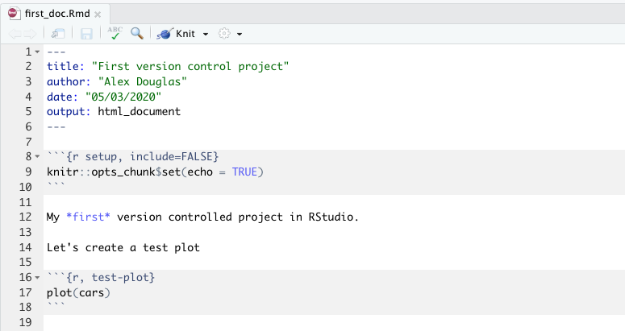
Take a look at the ‘Git’ tab which should list your new R markdown document (first_doc.Rmd in this example) along with first_repo.Rproj, and .gitignore (you created these files previously when following Option 1).
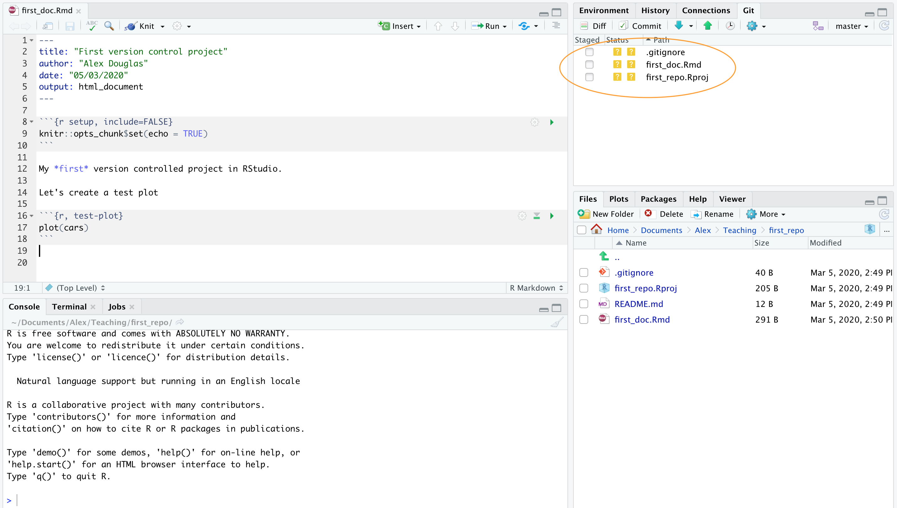
Following our workflow, we now need to stage these files. To do this tick the boxes under the ‘Staged’ column for all files. Notice that there is a status icon next to the box which gives you an indication of how the files were changed. In our case all of the files are to be added (capital A) as we have just created them.

After you have staged the files the next step is to commit the files. This is done by clicking on the ‘Commit’ button.
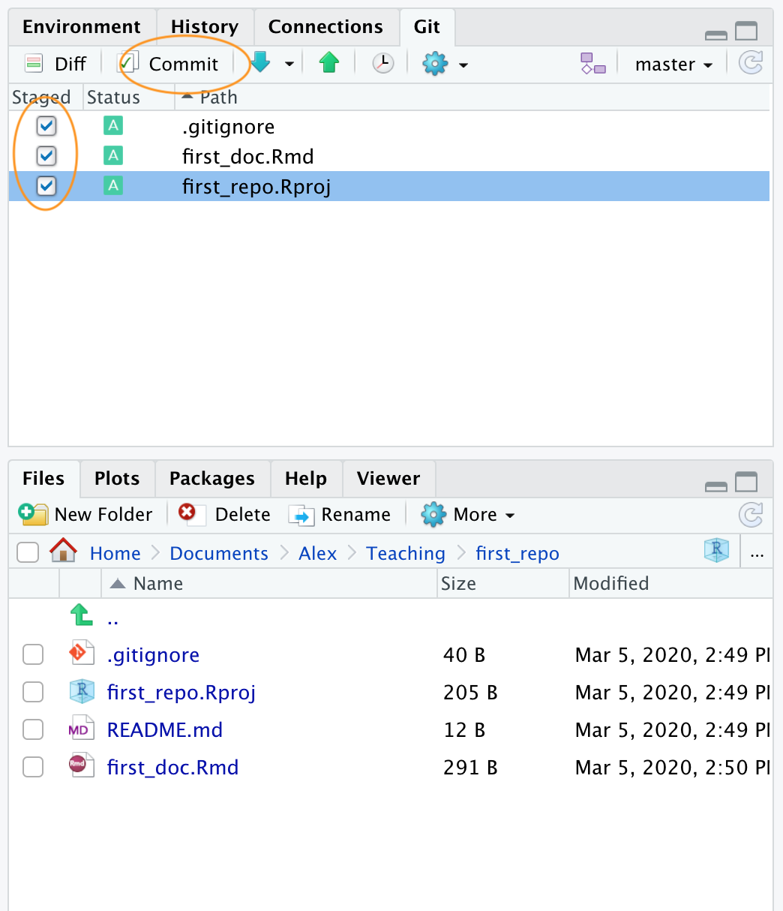
After clicking on the ‘Commit’ button you will be taken to the ‘Review Changes’ window. You should see the three files you staged from the previous step in the left pane. If you click on the file name first_doc.Rmd you will see the changes you have made to this file highlighted in the bottom pane. Any content that you have added is highlighted in green and deleted content is highlighted in red. As you have only just created this file, all the content is highlighted in green. To commit these files (take a snapshot) first enter a mandatory commit message in the ‘Commit message’ box. This message should be relatively short and informative (to you and your collaborators) and indicate why you made the changes, not what you changed. This makes sense as Git keeps track of what has changed and so it is best not to use commit messages for this purpose. It’s traditional to enter the message ‘First commit’ (or ‘Initial commit’) when you commit files for the first time. Now click on the ‘Commit’ button to commit these changes.
A summary of the commit you just performed will be shown. Now click on the ‘Close’ button to return to the ‘Review Changes’ window. Note that the staged files have now been removed.

Now that you have committed your changes the next step is to push these changes to GitHub. Before you push your changes it’s good practice to first pull any changes from GitHub. This is especially important if both you and your collaborators are working on the same files as it keeps you local copy up to date and avoids any potential conflicts. In this case your repository will already be up to date but it’s a good habit to get into. To do this, click on the ‘Pull’ button on the top right of the ‘Review Changes’ window. Once you have pulled any changes click on the green ‘Push’ button to push your changes. You will see a summary of the push you just performed. Hit the ‘Close’ button and then close the ‘Review Changes’ window.
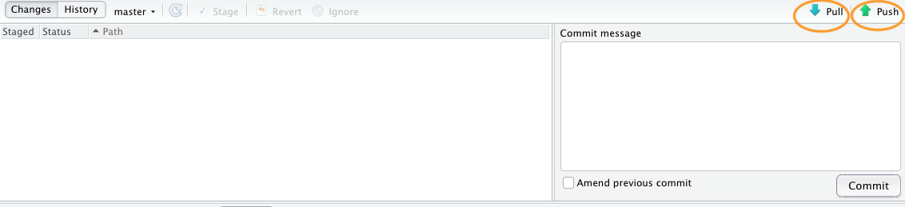
To confirm the changes you made to the project have been pushed to GitHub, open your GitHub page, click on the Repositories link and then click on the first_repo repository. You should see four files listed including the first_doc.Rmd you just pushed. Along side the file name you will see your last commit message (‘First commit’ in this case) and when you made the last commit.

To see the contents of the file click on the first_doc.Rmd file name.

7.6.1 Tracking changes
After following the steps outlined above, you will have successfully modified an RStudio project by creating a new R markdown document, staged and then committed these changes and finally pushed the changes to your GitHub repository. Now let’s make some further changes to your R markdown file and follow the workflow once again but this time we ’ll take a look at how to identify changes made to files, examine the commit history and how to restore to a previous version of the document.
In RStudio open up the first_repo.Rproj file you created previously (if not already open) then open the first_doc.Rmd file (click on the file name in the Files tab in RStudio).
Let’s make some changes to this document. Delete the line beginning with ‘My first version controlled …’ and replace it with something more informative (see figure below). We will also change the plotted symbols to red and give the plot axes labels. Lastly, let’s add a summary table of the dataframe using the kable() and summary() functions (you may need to install the knitr package if you haven’t done so previously to use the kable() function) and finally render this document to pdf by changing the YAML option to output: pdf_document.
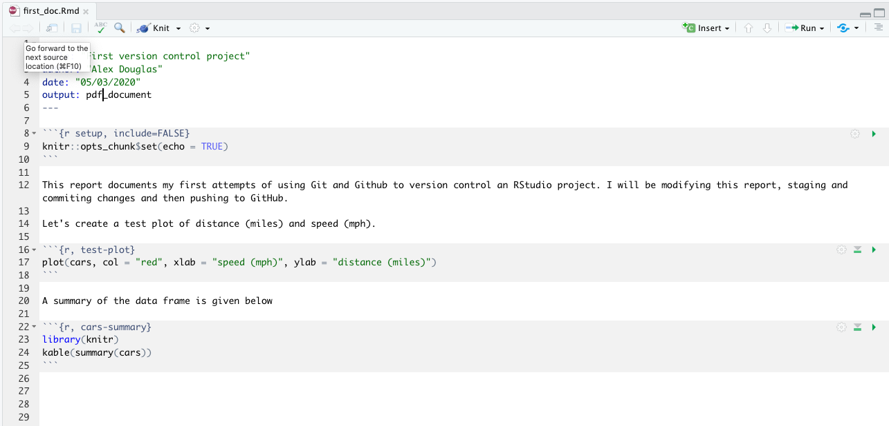
Now save these changes and then click the knit button to render to pdf. A new pdf file named first_doc.pdf will be created which you can view by clicking on the file name in the Files tab in RStudio.
Notice that these two files have been added to the Git tab in RStudio. The status icons indicate that the first_doc.Rmd file has been modified (capital M) and the first_doc.pdf file is currently untracked (question mark).
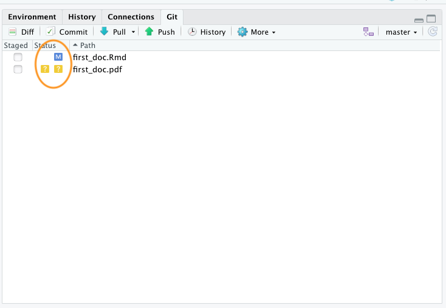
To stage these files tick the ‘Staged’ box for each file and click on the ‘Commit’ button to take you to the ‘Review Changes’ window

Before you commit your changes notice the status of first_doc.pdf has changed from untracked to added (A). You can view the changes you have made to the first_doc.Rmd by clicking on the file name in the top left pane which will provide you with a useful summary of the changes in the bottom pane (technically called diffs). Lines that have been deleted are highlighted in red and lines that have been added are highlighted in green (note that from Git’s point of view, a modification to a line is actually two operations: the removal of the original line followed by the creation of a new line). Once you’re happy, commit these changes by writing a suitable commit message and click on the ‘Commit’ button.

To push the changes to GitHub, click on the ‘Pull’ button first (remember this is good practice even though you are only collaborating with yourself at the moment) and then click on the ‘Push’ button. Go to your online GitHub repository and you will see your new commits, including the first_doc.pdf file you created when you rendered your R markdown document.
To view the changes in first_doc.Rmd click on the file name for this file.

7.6.2 Commit history
One of the great things about Git and GitHub is that you can view the history of all the commits you have made along with the associated commit messages. You can do this locally using RStudio (or the Git command line) or if you have pushed your commits to GitHub you can check them out on the GitHub website.
To view your commit history in RStudio click on the ‘History’ button (the one that looks like a clock) in the Git pane to bring up the history view in the ‘Review Changes’ window. You can also click on the ‘Commit’ or ‘Diff’ buttons which takes you to the same window (you just need to additionally click on the ‘History’ button in the ‘Review Changes’ window).

The history window is split into two parts. The top pane lists every commit you have made in this repository (with associated commit messages) starting with the most recent one at the top and oldest at the bottom. You can click on each of these commits and the bottom pane shows you the changes you have made along with a summary of the Date the commit was made, Author of the commit and the commit message (Subject). There is also a unique identifier for the commit (SHA - Secure Hash Algorithm) and a Parent SHA which identifies the previous commit. These SHA identifiers are really important as you can use them to view and revert to previous versions of files (details below Section 7.6.3). You can also view the contents of each file by clicking on the ‘View file @ SHA key` link (in our case ’View file @ 2b4693d1’).

You can also view your commit history on GitHub website but this will be limited to only those commits you have already pushed to GitHub. To view the commit history navigate to the repository and click on the ‘commits’ link (in our case the link will be labelled ‘3 commits’ as we have made 3 commits).

You will see a list of all the commits you have made, along with commit messages, date of commit and the SHA identifier (these are the same SHA identifiers you saw in the RStudio history). You can even browse the repository at a particular point in time by clicking on the <> link. To view the changes in files associated with the commit simply click on the relevant commit link in the list.

Which will display changes using the usual format of green for additions and red for deletions.
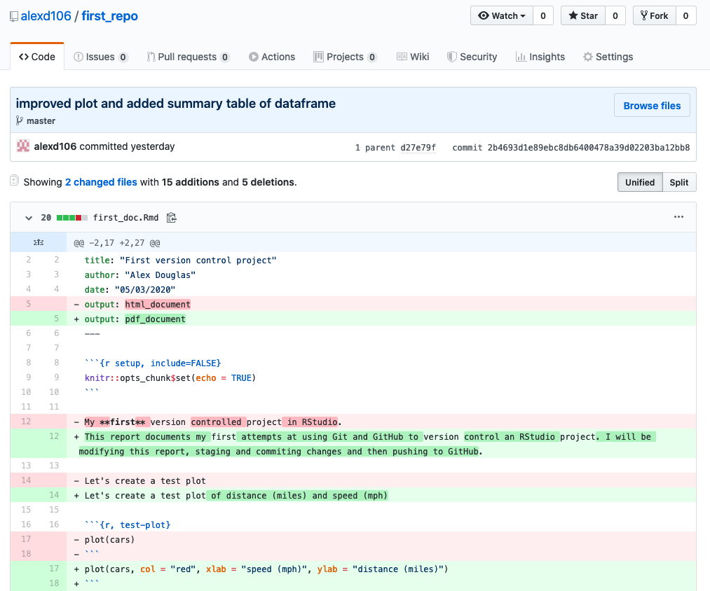
7.6.3 Reverting changes
One the great things about using Git is that you are able to revert to previous versions of files if you’ve made a mistake, broke something or just prefer and earlier approach. How you do this will depend on whether the changes you want to discard have been staged, committed or pushed to GitHub. We’ll go through some common scenarios below mostly using RStudio but occasionally we will need to resort to using the Terminal (still in RStudio though).
Changes saved but not staged, committed or pushed
If you have saved changes to your file(s) but not staged, committed or pushed these files to GitHub you can right click on the offending file in the Git pane and select ‘Revert …’. This will roll back all of the changes you have made to the same state as your last commit. Just be aware that you cannot undo this operation so use with caution.
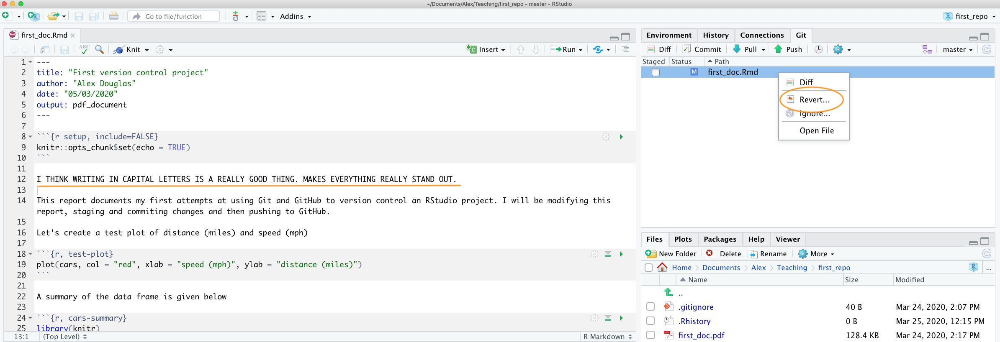
You can also undo changes to just part of a file by opening up the ‘Diff’ window (click on the ‘Diff’ button in the Git pane). Select the line you wish to discard by double clicking on the line and then click on the ‘Discard line’ button. In a similar fashion you can discard chunks of code by clicking on the ‘Discard chunk’ button.

Staged but not committed and not pushed
If you have staged your files, but not committed them then simply unstage them by clicking on the ‘Staged’ check box in the Git pane (or in the ‘Review Changes’ window) to remove the tick. You can then revert all or parts of the file as described in the section above.
Staged and committed but not pushed
If you have made a mistake or have forgotten to include a file in your last commit which you have not yet pushed to GitHub, you can just fix your mistake, save your changes, and then amend your previous commit. You can do this by staging your file and then tick the ‘Amend previous commit` box in the ’Review Changes’ window before committing.
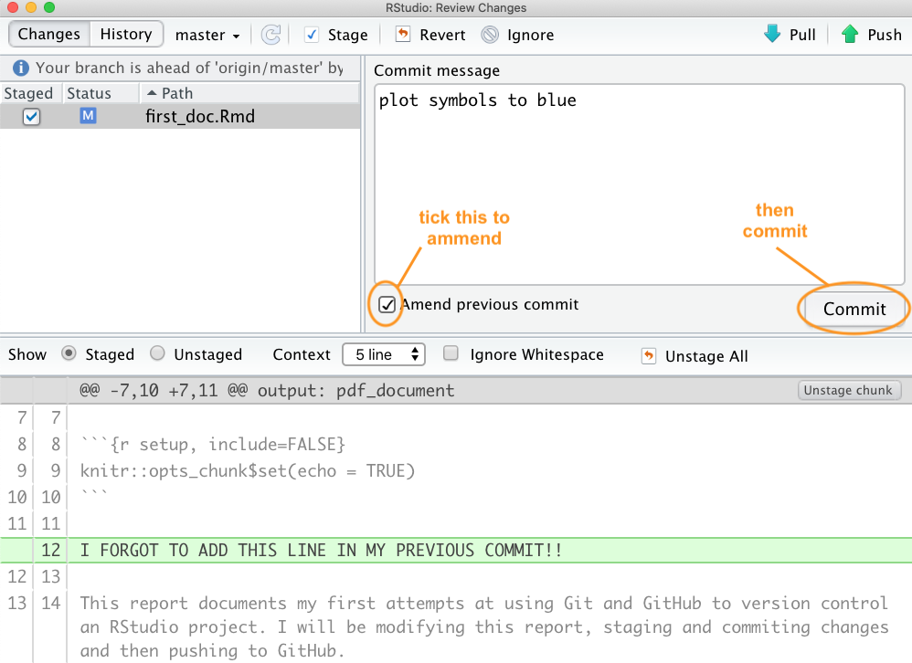
If we check out our commit history you can see that our latest commit contains both changes to the file rather than having two separate commits. We use the amend commit approach alot but it’s important to understand that you should not do this if you have already pushed your last commit to GitHub as you are effectively rewriting history and all sorts bad things may happen!

If you spot a mistake that has happened multiple commits back or you just want to revert to a previous version of a document you have a number of options.
Option 1 - (probably the easiest but very unGit - but like, whatever!) is to look in your commit history in RStudio, find the commit that you would like to go back to and click on the ‘View file @’ button to show the file contents.

You can then copy the contents of the file to the clipboard and paste it into your current file to replace your duff code or text. Alternatively, you can click on the ‘Save As’ button and save the file with a different file name. Once you have saved your new file you can delete your current unwanted file and then carry on working on your new file. Don’t forget to stage and commit this new file.

Option 2 - (Git like) Go to your Git history, find the commit you would like to roll back to and write down (or copy) its SHA identifier.

Now go to the Terminal in RStudio and type git checkout <SHA> <filename>. In our case the SHA key is 2b4693d1 and the filename is first_doc.Rmd so our command would look like this:
git checkout 2b4693d1 first_doc.RmdThe command above will copy the selected file version from the past and place it into the present. RStudio may ask you whether you want to reload the file as it now changed - select yes. You will also need to stage and commit the file as usual.
If you want to revert all your files to the same state as a previous commit rather than just one file you can use (the single ‘dot’ . is important otherwise your HEAD will detach!):
git rm -r .
git checkout 2b4693d1 .
Note that this will delete all files that you have created since you made this commit so be careful!
Staged, committed and pushed
If you have already pushed your commits to GitHub you can use the git checkout strategy described above and then commit and push to update GitHub (although this is not really considered ‘best’ practice). Another approach would be to use git revert (Note: as far as we can tell git revert is not the same as the ‘Revert’ option in RStudio). The revert command in Git essentially creates a new commit based on a previous commit and therefore preserves all of your commit history. To rollback to a previous state (commit) you first need to identify the SHA for the commit you wish to go back to (as we did above) and then use the revert command in the Terminal. Let’s say we want to revert back to our ‘First commit’ which has a SHA identifier d27e79f1.
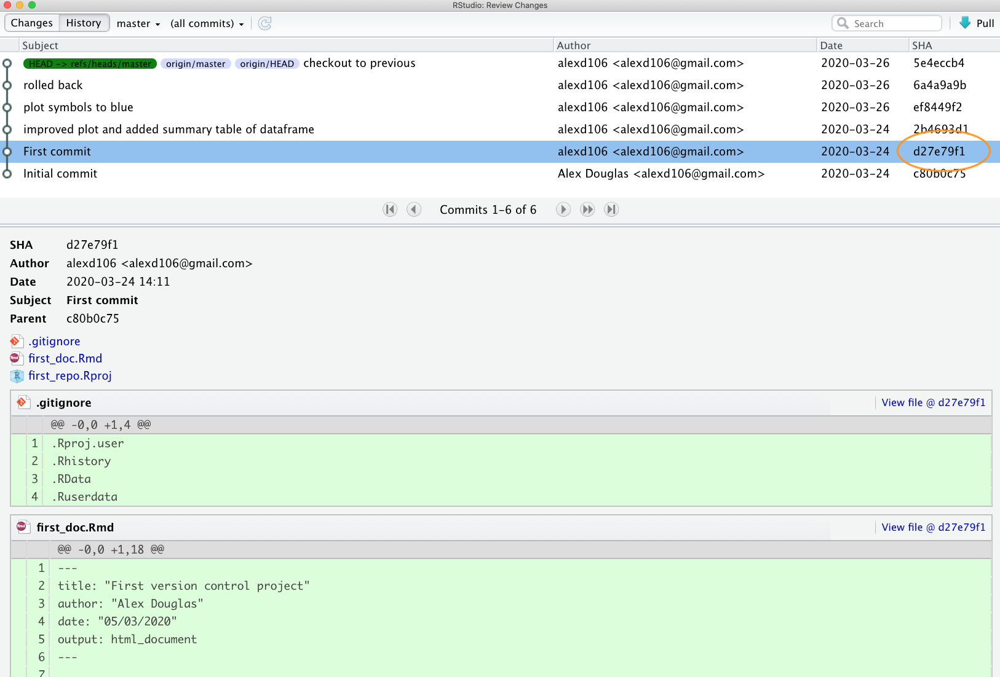
We can use the revert command as shown below in the Terminal. The --no-commit option is used to prevent us from having to deal with each intermediate commit.
git revert --no-commit d27e79f1..HEADYour first_doc.Rmd file will now revert back to the same state as it was when you did your ‘First commit’. Notice also that the first_doc.pdf file has been deleted as this wasn’t present when we made our first commit. You can now stage and commit these files with a new commit message and finally push them to GitHub. Notice that if we look at our commit history all of the commits we have made are still present.

and our repo on GitHub also reflects these changes

7.7 Using Git with VSCode
Now that we have our project and repositories (both local and remote) set up, it’s finally time to learn how to use Git in VSCode!
Typically, when using Git your workflow will go something like this:
You create/delete and edit files in your project directory on your computer as usual (saving these changes as you go)
Once you’ve reached a natural ‘break point’ in your progress (i.e. you’d be sad if you lost this progress) you stage these files
You then commit the changes you made to these staged files (along with a useful commit message) which creates a permanent snapshot of these changes
You keep on with this cycle until you get to a point when you would like to push these changes to GitHub
If you’re working with other people on the same project you may also need to pull their changes to your local computer
OK, let’s go through an example to help clarify this workflow.
Tracking changes
Commit History
Reverting changes
7.8 Collaborate with Git
GitHub is a great tool for collaboration, it can seem scary and complicated at first, but it is worth investing some time to learn how it works. What makes GitHub so good for collaboration is that it is a distributed system, which means that every collaborator works on their own copy of the project and changes are then merged together in the remote repository. There are two main ways you can set up a collaborative project on GitHub. One is the workflow we went through above, where everybody connects their local repository to the same remote one; this system works well with small projects where different people mainly work on different aspects of the project but can quickly become unwieldy if many people are collaborating and are working on the same files (merge misery!). The second approach consists of every collaborator creating a copy (or fork) of the main repository, which becomes their remote repository. Every collaborator then needs to send a request (a pull request) to the owner of the main repository to incorporate any changes into the main repository and this includes a review process before the changes are integrated. More detail of these topics can be found in Section 7.10.
7.9 Git tips
Generally speaking you should commit often (including amended commits) but push much less often. This makes collaboration easier and also makes the process of reverting to previous versions of documents much more straight forward. We generally only push changes to GitHub when we’re happy for our collaborators (or the rest of the world) to see our work. However, this is entirely up to you and depends on the project (and who you are working with) and what your priorities are when using Git.
If you don’t want to track a file in your repository (maybe they are too large or transient files) you can get Git to ignore the file by adding it to the .gitignore file. On RStudio, in the git pane, you can right clicking on the filename to exclude and selecting ‘Ignore…’

This will add the filename to the .gitignore file. If you want to ignore multiple files or a particular type of file you can also include wildcards in the .gitignore file. For example to ignore all png files you can include the expression *.png in your .gitignore file and save.
If it all goes pear shaped and you end up completely trashing your Git repository don’t despair (we’ve all been there!). As long as your GitHub repository is good, all you need to do is delete the offending project directory on your computer, create a new RStudio project and link this with your remote GitHub repository using Option 2 (-Section 7.5.3). Once you have cloned the remote repository you should be good to go.
7.10 Further resources
There are many good online guides to learn more about git and GitHub and as with any open source software there is a huge community that can be a great resource:
The British Ecological Society guide to Reproducible Code
The GitHub guides
The Mozilla Science Lab GitHub for Collaboration on Open Projects guide
Jenny Bryan’s Happy Git and GitHub. We borrowed the idea (but with different content) of RStudio first, RStudio second in the ‘Setting up a version controlled Project in RStudio’ section.
Melanie Frazier’s GitHub: A beginner’s guide to going back in time (aka fixing mistakes). We followed this structure (with modifications and different content) in the ‘Reverting changes’ section.
If you have done something terribly wrong and don’t know how to fix it try Oh Shit, Git or if you’re easily offended Dangit, Git
These are only a couple of examples, all you need to do is search for “version control with git and GitHub” to see how huge the community around these open source projects is and how many free resources are available for you to become a version control expert.
7.11 Practical
7.11.1 Context
We will configure Rstudio to work with our github account, then create a new project and start using github. To have some data I suggest to use the awesome palmerpenguins dataset 🐧.
7.11.2 Information of the data
These data have been collected and shared by Dr. Kristen Gorman and Palmer Station, Antarctica LTER.
The package was built by Drs Allison Horst and Alison Hill, check out the official website.
The package palmerpenguins has two datasets.
The dataset penguins is a simplified version of the raw data; see ?penguins for more info:
head(penguins)# A tibble: 6 × 8
species island bill_length_mm bill_depth_mm flipper_length_mm body_mass_g
<fct> <fct> <dbl> <dbl> <int> <int>
1 Adelie Torgersen 39.1 18.7 181 3750
2 Adelie Torgersen 39.5 17.4 186 3800
3 Adelie Torgersen 40.3 18 195 3250
4 Adelie Torgersen NA NA NA NA
5 Adelie Torgersen 36.7 19.3 193 3450
6 Adelie Torgersen 39.3 20.6 190 3650
# ℹ 2 more variables: sex <fct>, year <int>The other dataset penguins_raw has the raw data; see ?penguins_raw for more info:
head(penguins_raw)# A tibble: 6 × 17
studyName `Sample Number` Species Region Island Stage `Individual ID`
<chr> <dbl> <chr> <chr> <chr> <chr> <chr>
1 PAL0708 1 Adelie Penguin … Anvers Torge… Adul… N1A1
2 PAL0708 2 Adelie Penguin … Anvers Torge… Adul… N1A2
3 PAL0708 3 Adelie Penguin … Anvers Torge… Adul… N2A1
4 PAL0708 4 Adelie Penguin … Anvers Torge… Adul… N2A2
5 PAL0708 5 Adelie Penguin … Anvers Torge… Adul… N3A1
6 PAL0708 6 Adelie Penguin … Anvers Torge… Adul… N3A2
# ℹ 10 more variables: `Clutch Completion` <chr>, `Date Egg` <date>,
# `Culmen Length (mm)` <dbl>, `Culmen Depth (mm)` <dbl>,
# `Flipper Length (mm)` <dbl>, `Body Mass (g)` <dbl>, Sex <chr>,
# `Delta 15 N (o/oo)` <dbl>, `Delta 13 C (o/oo)` <dbl>, Comments <chr>For this exercise, we’re gonna use the penguins dataset.
7.11.3 Questions
1) Create a github account if not done yet.
2) Configure Rstudio with your github account using the usethis package.
Solution
usethis::git_sitrep()
usethis::use_git_config(
user.name = "your_username",
user.email = "your_email@address.com"
)3) Create and Store your GITHUB Personal Authorisation Token
Solution
usethis::create_github_token()
gitcreds::gitcreds_set()4) Create a new R Markdown project, initialize it for git, and create a new git repository
Solution
#create R project
usethis::use_git()
#restart R
usethis::use_github()
usethis::git_vaccinate()5) Create a new Rmarkdown document, in your project. Then save the file and stage it.
6) Create a new commit including the new file and push it to github (Check on github that it works).
7) Edit the file. Delete everything after line 12. Add a new section title, simple text and text in bold font. Then knit and compile.
8) Make a new commit (with a meaningful message), and push to github.
9) Create a new branch, and add a new section to the rmarkdown file in this branch. Whatever you want. I would suggest a graph of the data.
10) Create a commit and push it to the branch.
11) On github, create a pull request to merge the 2 different branches.
12) Check and accept the pull request to merge the 2 branches.
You have successfully used all the essential tools of git 🎉 . You are really to explore 🕵️ and discover its power 💪

7.11.4 Solution
2)
usethis::git_sitrep()
usethis::use_git_config(
user.name = "your_username",
user.email = "your_email@address.com"
)3)
usethis::create_github_token()
gitcreds::gitcreds_set()4)
#create R project
usethis::use_git()
#restart R
usethis::use_github()
usethis::git_vaccinate()